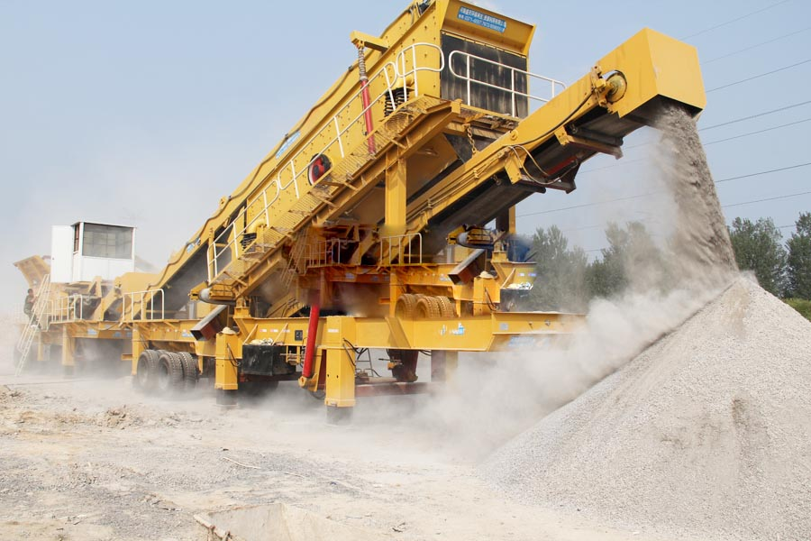

Construction waste crushing production line

Mobile construction waste crushing station for urban construction waste crushing.
construction of gyratory crusher
construction of gyratory crusher. Where construction waste disposal equipment after use to find, whether domestic construction waste recycling business, construction waste disposal equipment after use, construction waste recycling business with the advent of construction waste disposal technology, some of the city's resources benefit.
Investment construction waste crushing station How much money? How recycling of construction waste, into a waste treatment plant construction, concrete blocks piled up a hill. After a simple sorting and sizes of concrete blocks are fed conveyor belt construction waste crusher, crushed into fine particles, which along with other transmission into the mixer, and other mixed material into the brick program.

Introduction Of Construction Waste Recycling
Construction waste recycling is the separation and recycling of recoverable waste materials generated during construction and remodeling. Packaging, new material scraps and old materials and debris all constitute potentially recoverable materials. In masonry materials is recyclable.
Construction waste recycling is the separation and recycling of recoverable waste materials generated during construction and remodeling. Packaging, new material scraps and old materials and debris all constitute potentially recoverable materials. In renovation, appliances, masonry materials, doors and windows are recyclable.
Construction Waste Recycling program
As you see, construction waste really do harm to our life, how can we deal with them? As is known to all, construction waste includes gravel, concrete and other masonry material, so it is possible for us to reuse them. So CAG provides solution to construction waste process. For the construction waste crushing process, we should choose the right materials that are usable and next is crushing.
Construction waste disposal equipment _ construction waste crushing equipment, CAG is the world's leading rock and mineral processing equipment manufacturing enterprises, advanced building Disposal: mobile crushing plant used in construction garbage crushing. Improve the construction waste disposal technology to provide a full set of construction waste disposal equipment.
Construction waste recycling machine
CAG supplies the professional construction waste plant, including impact crusher, jaw crusher, cone crusher and mobile crusher. Of all these construction crushers, mobile crusher is the most convenient. You know usually the construction waste is in city and to deal with them we should better use portable equipment. CAG have five series of mobile crusher: cone crusher series mobile crusher,jaw crusher series mobile crusher, impact crusher series mobile crusher, multi-crushing mobile crusher and crawler type mobile crusher. The first four mobile crushers are tyre type mobile crusher and crawler type mobile crusher is crane on-track and is our ultramodern newly designed mobile crusher.
Construction waste recycling machine for sale. One example of reuse is soil and rubble. This can be used as a subsoil for landscaping. Rubble can be processed and used for a number of purposes including aggregate for roads. Leftover masonry material can be crushed on site and reused in driveways.With regard to demolition waste, wood products such as doors, can be salvaged and collected, then reused or sold for future use. During renovation projects, many items can be salvaged and used later on. Typical items that can be reused are plumbing fixtures, doors, cabinets, windows, lighting fixtures, decorative items including fireplaces and stonework, ceiling and floor tiles.
Construction waste recycling machine
The machines used in construction waste recycling process are mainly crushers. These crushers can crush construction debris, scrap concrete into building stone materials. There are severals types of construction waste crusher machines.
CAG is a manufacturer of crushers and grinding mills in China. Mobile crushing plant we design is very suitable for construction waste recycling. Of course, we also supply other crushing equipments and grinding machinery for reuse of construction debris. With 30 yeas’ experience, CAG is confident to supply best machines and service.
Many of the construction waste by sorting waste, after removing or crushed, mostly as a renewable resource re-use, such as: scrap steel, scrap wire, scrap wire and various accessories, such as scrap metal, after sorting, concentration, re-melted after can be processed into a variety of steel products manufacturing; bamboo wood waste can be used to manufacture artificial wood; after brick, stone, concrete and other waste by crushing, may be able to sand for mortar, plastering mortar, hit concrete cushion, etc., can also be used to make blocks, pavement tiles, bricks and other building materials grille.
Construction waste recycling machine manufacturers. Use of waste recycling of construction waste, CAG construction waste recycling equipment for the successful development of urban construction and development has far-reaching significance, investment construction waste disposal equipment also have broad prospects for the development of far.
Leave Me A Message, Now
If you have any questions regarding equipment prices, production line configuration or other problems, you can send a message to us, we will contact you soon.